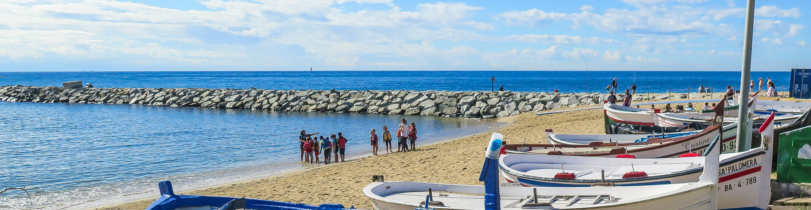

 Ruta
Ruta
Ruta Valldeix
- Distància
- 14,10 km
- Durada
- 5 hores
- Desnivell
- 450 m
- Dificultat
- Mitjana
- Tipologia
- Circular antihorari
- Temàtica
- Boscos, Paisatgístic, Platges i cales
«Prova-la des de casa» camina sola pel recorregut: veuràs com es mou el mapa i els avisos en arribar a cada punt.
Amb cobertura no cal descarregar res (gasta uns 8 MB de dades). Si la perds a mig camí, el mapa, el GPS i els avisos continuen funcionant.
Vas a un lloc sense cobertura?
Comprovant…
Descarrega-la ara, amb connexió, i la podràs fer tota en mode avió: mapa, ortofoto, fotos, àudios i vídeos.
A l'iPhone: botó Compartir → Afegeix a la pantalla d'inici. Obre-la sempre des de la icona; si no, l'iPhone pot esborrar la descàrrega.
Què hi ha?
Informe per a proves
Si alguna cosa no va, prem «Copia l'informe» i enganxa'l al xat.
Mapa: © col·laboradors d'OpenStreetMap (ODbL). Ortofoto: © Institut Cartogràfic i Geològic de Catalunya (CC BY 4.0). Continguts: Natura Local.